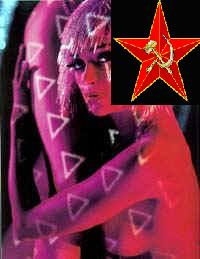

Forums galactiques > Taverne galactique : lieu de discussion informel > Salle de duel
Pages : 1 2 ... 16 17 18 ... 22 23
| Groochie Réputation à la taverne : 709  03/01 ETU 23:12 | Score : 0 Détails Groochie balança son marteau par terre:
"De toute façon je n'aime pas cette arme, je préfère le corps à corps avec les points" | ||
| Vardenfell Réputation à la taverne : 77  04/01 ETU 12:18 | Score : 1 Détails Vardenfell regardait le combat se dérouler
Bien, très bien, la salle de duel commnence à repartir... Parfait ! Je suis prêt moi aussi pour un petit duel, avis aux amateurs ! ! ! | ||
| Groochie Réputation à la taverne : 709 04/01 ETU 12:20 | Score : 1 Détails Groochie venait d'entendre une nouvelle qui l'avait mit de bonne humeur:
"Ouai, moi je veux me battre contre toi Vardenfell, à quand le combat contre Bahamut Zero??" | ||
| Vardenfell Réputation à la taverne : 77 04/01 ETU 12:23 | Score : 1 Détails Tu veux te battre ? Alors c'est parti !
Viens avec moi... Ils se dirigèrent vers un droïde... Bib bip...Présentez armes avant combat... Bip bip Un fusil ionique léger, un poignard et un pistolet blaster... Et toi Groochie ? | ||
| EriKa Réputation à la taverne : 17  04/01 ETU 12:28 | Score : 0 Détails Erika assise dans les tribunes lança à groochie sa faucille .
Tiens bonne ,chance ! | ||
| Groochie Réputation à la taverne : 709 04/01 ETU 12:34 | Score : 2 Détails "Pour moi, deux épée simple, une pour chaque main et une lance au cas ou."
Il posa la faucille offerte par Erika. "Non merci, je ne suis pas très alaise avec ceci." | ||
| Vardenfell Réputation à la taverne : 77 04/01 ETU 12:48 | Score : 2 Détails Alors c'est parti...
Vardenfell saisit trainquielement son fusil, l'ouvit et y introduisit une balle... Celle là mon coco, elle porte ton nom ! En un instant, il visa et tira son Groochie... | ||
| Groochie Réputation à la taverne : 709 05/01 ETU 02:04 | Score : 2 Détails Groochie qui fut surpris de la rapidité de Vardenfell et réussi à contré le tire de justesse:
"Ah?? C'est donc ça, tu veux la jouer rapide, tu va être servit mon beau loulou." Puis il courut en direction de Vardenfell en faisant tournoyer ses épées. | ||
| Shiranui Réputation à la taverne : 227  05/01 ETU 13:49  | Score : 0 Détails Shiranui se demandait quelle serait l'issue de ce duel...
| ||
| Vardenfell Réputation à la taverne : 77 05/01 ETU 13:54 | Score : 0 Détails Merde! Loupé !
Vardenfell remis une balle ionique dans son fusil et fit feu de nouveau sur Groochie ; se dernier l'évita, puis fonça sur Vardenfell et commença à donner des coups d'épée... Vardenfell pointa son arme sur Groochie, mais ce dernier lui coupa en deux avec son épée... Vardenfell sortit alors son poignard... | ||
| Adun Toridas Réputation à la taverne : 107  05/01 ETU 14:01 | Score : 0 Détails Adun Toridas qui passait par là pour récupérer la récompense qu'il avait gagné au loto, s'arrêta devans la salle de duel.
Il se laissa tenter et y entra. Il murmura: -Groochie contre Vardenfell... interressant... Et il s'assit à coté de Erika pour observer le duel. | ||
| Caleri Nuura Réputation à la taverne : 119  05/01 ETU 14:05 | Score : 0 Détails Caleri entra, puis s'appuya contre un mur...
Intéressant ce combat, vous ne trouvez pas? Caleri semblait sortir de sa poche ce qui ressemblait à une cigarette, mais il s'agissait en fait d'une fine et petit lame, avec laquelle il se servait de cure dents... | ||
| Groochie Réputation à la taverne : 709 05/01 ETU 14:08 | Score : 1 Détails Vardenfell sortie son poignard et essaya de poignardé Groochie, mais celui ci évita le couteau et assigna un grand coup de pied dans la tête de Vardenfell.
Puis il lâcha ses épées et donna un grand coup de point dans la tête de Vardenfell celui si tomba. Groochie continuait a lui mètre de grand coup de point. "Tu va crevé!!!!!!!!!!!!!!!!!!" | ||
| Vardenfell Réputation à la taverne : 77 05/01 ETU 14:16 | Score : 1 Détails Aïe Aïe...
Vardenfell commençait serieusement à avoir mal... Il se se resaisit et, au moment ou Groochie s'appretait à lui mettre un autre coup,Vardenfell saisti son bras, le brisa et lui envoya un splendide coup de genou dans le visage... Groochie était à terre...Vardenfell sortit son pistolet de sa ceinture... | ||
| Groochie Réputation à la taverne : 709 05/01 ETU 17:08 | Score : 5 Détails Mince, Vardenfell visait Groochie avec son arme, il allait tirait, dans son dernière élan Groochie tenta l'absolue:
PRRRRRRRRRRROOOOOOOOOOOOOOUUUUUUUUUUUUUTTTTTTTTTTT Groochie venait de lâcher une caisse phénoménale, l'odeur était atroce. Vardenfell tomba a terre, il n'arrivait plus a respiré. "KOF KOF!!!!! Par pitié, de l'aire..............." Vardenfell s'évanouie. Groochie se levât et cria: "Acclamé moi cher public." Il regarde en direction du public, tous étaient tombés dans les pommes. "OUPS!!!!" | ||
| Shiranui Réputation à la taverne : 227 05/01 ETU 19:40 | Score : 0 Détails Shiranui se réveilla peu après et courrut à l'abri de cet immonde gaz... Pour faire un duel, on verra plus tard...
| ||
| Vardenfell Réputation à la taverne : 77 05/01 ETU 19:46 | Score : 1 Détails Vardenfell était au bord de l'agonie, l'odeur était vraiment insoutenable !
Groochie rigolait comme un con, l'odeur n'avait pas l'air de le déranger ! Soudain, un droïde de combat arriva derrière Groochie et le saisit... Commandant Groochie...Bip bip...je vous arrête...bip bip...motif : armement conventionels uniquement autorisé...bip bip...armes chimiques et bactériologiques interdites... Le droïde traina le chat par la queue et le jeta dehors Bip bip...Sa pue c'est horrible...bip bip...Groochie à l'anus en feu ou quoi?... | ||
| Amenhotep Réputation à la taverne : 93  05/01 ETU 21:19 | Score : 0 Détails Amenhotep rentra dans cette salle ...
Ca schlingue ici ou quoi ? Qui s'est qui c'est laché la ? Les armes chimiques et bactériologiques sont interdites ici ... Koronag les avait interdit ... Amenhotep rentra, et s'appuya contre le mur, a coté des autres Commandants, attendant son tour pour affronter quelqu'un ... | ||
| Araskel Réputation à la taverne : 396  05/01 ETU 21:22 | Score : 0 Détails Araskel rentra dans la salle entouré de deux de ses guerriers, d'un pas rapide, il semblait en forme.
Il fit un signe a ses hommes, qui resterent a l'entrée de la piece. Il regarda les gens present, et vu le Thotien qui attendait. "Un duel a l'épée et aux armes a feu, ca vous dit commandants? | ||
| Vardenfell Réputation à la taverne : 77 05/01 ETU 21:27 | Score : 0 Détails Le droïde de combat revint...
Bip bip...Sa sent déjà meilleur...bip bip...Je déclare le duel Araskel/Amenhotep ouvert... |
Pages : 1 2 ... 16 17 18 ... 22 23
Forums galactiques > Taverne galactique : lieu de discussion informel > Salle de duel